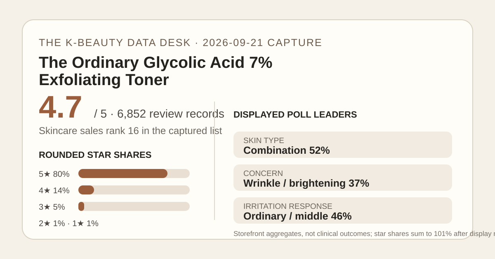
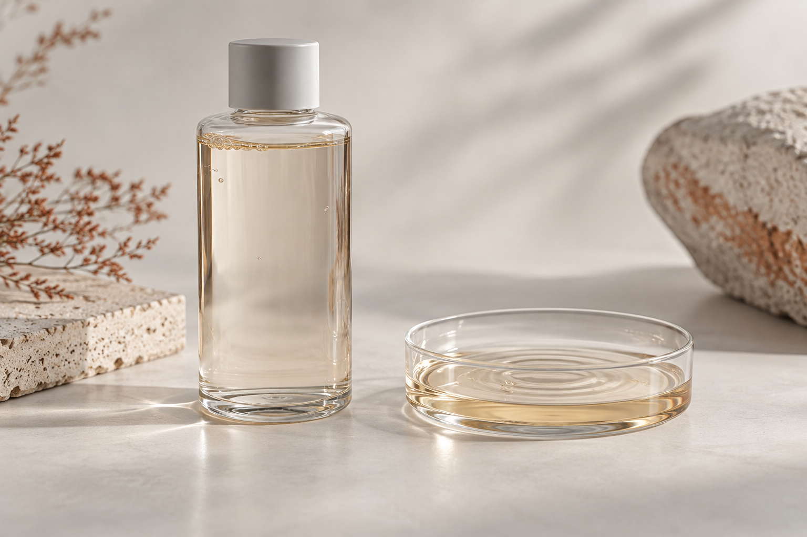

Data captured September 21, 2026. This is an independent analysis of retailer-displayed aggregates. I did not test the toner, and no individual review, reviewer name, or user photo is copied or translated.

The short version: the 240 ml listing held skincare sales rank 16 in the captured retailer list. Its header and review panel both showed 4.7 out of 5 from 6,852 review records. Most displayed ratings were five-star, but the irritation poll was notably mixed: the largest response was the middle category at 46%, while 23% selected that irritation was felt.
The five displayed star shares add to 101%, which is a normal consequence of rounding each category separately. That is not evidence of an extra group, duplicate records, or a calculation error in the review count. It also means the chart should be used directionally: it shows a strongly positive distribution with a visible lower-rating tail, not exact raw counts.
A 4.7 average across 6,852 records is a substantial storefront signal. It tells us that high ratings dominate a large visible base. It does not establish how the retailer verifies purchases, whether every rating concerns the same package and regional formula, or whether the reviewers used the toner with similar routines. Promotions, stock, placement, and the product's long retail history can all affect both rank and volume.
The 80% five-star share is lower than the 90%-plus pattern seen in some products on this site, while the combined one-to-three-star display is 7% after rounding. That gives the high average useful texture: enthusiasm is broad, yet the page does not present a uniformly positive audience. A buyer should not erase that minority simply because the headline score looks strong.
The poll is best treated as sample description. Combination skin was the largest displayed skin-type group, but that does not make the toner “for” combination skin or rule it out for everyone else. The concern labels show what respondents selected, not what the product objectively improved. Most importantly, the 23% irritation response is not an adverse-event rate for all buyers; it is a share within a self-selected retailer poll with an undisclosed response base.
The retailer's automated aggregate summary classified 84% of recent feedback as positive and grouped discussion around smoother-feeling surface texture, use on both face and body areas, and value from the 240 ml size. Those are anonymous, retailer-generated themes, not quotations and not independent measurements. This article does not reproduce the summary's wording, any individual account, or any claim that a reported impression represents a typical outcome.
Automated summaries can compress context. They may underrepresent stop-use experiences, combine different routines, and turn tentative language into a cleaner theme than the underlying feedback warrants. The mixed irritation poll is therefore a valuable counterweight: a positive theme label should not be read as universal comfort.

“Toner” describes placement and format more than universal mildness. A watery product can still be an exfoliating step. Before buying, check the current package directions and full regional ingredient list, then decide which existing active step it would replace. Adding it on top of another acid, retinoid, scrub, or recently irritated routine makes the retailer average less relevant to your own risk.
If your skin is reactive, recently compromised, or being treated for a condition, a large review count is not a safety clearance. A small-area introduction, conservative frequency, and stopping when persistent burning or worsening irritation appears are practical safeguards; professional advice matters when your situation is medical. This is general shopping context, not a personalized regimen.
For body use, the same caution applies. Anonymous themes around elbows or textured areas do not prove treatment of pigmentation or keratosis pilaris. Confirm the label's permitted areas, avoid broken or freshly shaved skin if the directions warn against it, and consider sun exposure for any exfoliating routine. Do not infer a use simply because another shopper may have described it.
The captured price was ₩16,900, or roughly ₩704 per 10 ml using the displayed pack size. That is a dated Korea-store shelf calculation, not a global value verdict. Shipping, tax, exchange rate, local authorization, expiry, and regional package differences may matter more than the bottle price. The listing did not show a discount in the captured header, but stock and promotions can change.
Large volume only creates value if the directions and your tolerance support using it before expiry. Buying more product because the per-milliliter figure looks low can be false economy if it duplicates another exfoliant or encourages overuse. Compare usable volume and role in your routine, not just the headline milliliters.
Yes in the narrow aggregate sense: the captured page showed 4.7 out of 5 across 6,852 records. Eighty percent of displayed ratings were five-star after retailer rounding, but 7% were in the one-to-three-star categories.
The displayed poll does not support a simple yes. The middle response led at 46%, 31% selected gentle, and 23% selected that irritation was felt. That is a self-selected poll, not a prospective safety study, but it is still a reason not to treat a watery format as automatically mild.
This analysis makes no treatment claim. Concern selections and anonymous themes are not diagnoses, measured outcomes, or clinical efficacy data. Check the current label and seek qualified advice for a medical condition.
No. It is the captured price for the 240 ml Korea listing on September 21, 2026. Retail price, stock, package, and regional terms can change.
The Ordinary Glycolic Acid 7% Exfoliating Toner combines a high 4.7 average with a sizeable 6,852-record base and a clearly positive star distribution. The most decision-relevant counterpoint is the mixed irritation poll, including a 23% irritation-selected share within that survey. Shortlist it only if the current label fits an actual gap in your routine, and keep the evidence in proportion: popular storefront feedback can guide questions, but it cannot guarantee tolerance, prove treatment, or replace the directions on the product you will actually use.
← All K-Beauty Data Desk reviews · Best-seller rankings · Skin-poll representation · About & methodology
Check the dated source product page.
Published by The K-Beauty Data Desk · Aggregate data captured 2026-09-21. No individual review text, name, or photo is reproduced or translated. I did not test the product and received no product or payment for this coverage.